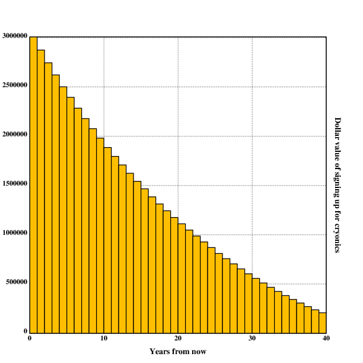
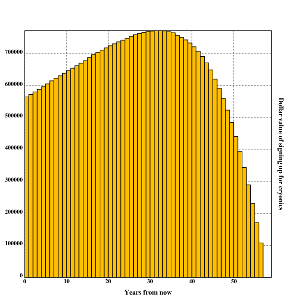
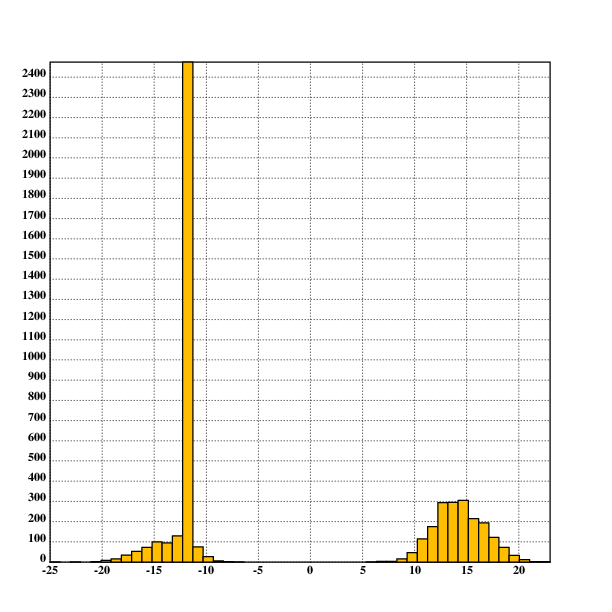

author: niplav, created: 2019-10-18, modified: 2025-03-23, language: english, status: maintenance, importance: 7, confidence: possible
Is cryonics worth it, and if yes, should one cryocrastinate (i.e. postpone signing up for cryonics to a later date)? Betteridge's law of headlines only applies partially here: Yes, it is probably worth it (under plausible assumptions $850k for a 20 year old, and more for older people), and no, cryocrastination is usually irrational (unless one doesn't experience value drift, in which case cryocrastination is rational until age 55). A cost-benefit analysis written in Lua, considering neurocryopreservation with Alcor. I also perform a Monte-Carlo simulation using Guesstimate, and find that signing up for cryonics at age 20 is worth $18m in the mean, median -$100k (90% confidence interval: -$2.16m, $58.25m). It therefore seems recommendable to sign up for cryonics immediately.
If I died, would I be rid of my senses?
Or will it retain, trapped within my corpse, in stasis?
If I died, would I be a woman in heaven?
Or would I fall asleep, not knowing what it’s like to feel alive?If I died, would I begin with a new life?
Or would I be gone as quickly as the breath I give last?
If I died, would I be a woman in heaven?
Or would I fall asleep, not knowing what it’s like to feel alive?
— Patricia Taxxon, “Deconstruct” from “Foley Artist”, 2019
One day they woke me up
So I could live forever
It’s such a shame the same
Will never happen to you
— Jonathan Coulton, “Want You Gone” from “Portal 2: Songs to Test By (Volume 3)”, 2011
Many would-be cryonicists cryocrastinate, i.e. they put off signing up for cryonics until a later point in their life. This has often been explained by the fact that signing up for cryonics requires high conscientiousness and can be easily be delayed until another point in life.
I'll get around to doing it eventually
— person who was cremated
However, it hasn't yet been explored whether this procrastination might be rational if eventually followed through with: Many cryonics organisations have high membership fees, which might be avoided by waiting.
To find this out, I first present a point-estimate model of whether (and if yes, when) to sign up for cryonics. The model is written in Lua. I then proceed and create a Guesstimate model to determine the distribution of the expected value of signing up.
This write-up is not intended as an introduction to the concept of cryonics. For a popular introduction to the topic that clarifies many common misconceptions about the practice, see Urban 2016.
For more basic information about the topic, there are the Cryonics FAQ by Ben Best, a former director of the Cryonics Institute, as well as Alcor's Cryonics FAQ, which should answer most questions people usually have about cryonics.
If you have decided that you indeed do want to sign up for cryonics, the best existing resource is the Cryonics Signup Guide.
This cost-benefit calculation depends on various factors that carry significant uncertainty with them, and necessarily contains numerous simplifications and inadequacies. The calculated values ought to be equipped with gigantic error bars. I encourage others to make their own calculations and models, compare results and bet on the relevant probabilities.
Specifically, this analysis attempts to be relatively conservative, think of the lower range of a 50% confidence interval. For example, this leads to excluding singularity scenarios with lifespans of billions or trillions of years at enormous quality. This is a balancing act, some people might criticize that the number of worlds with indefinite life extension and cryonics revival but without cosmic endowment is very small. These concerns might be correct, but bare resemblance to Pascal's mugging-like scenarios. In order to avoid such concerns, I focus on relatively unspectacular visions of the future. If cosmic-endowment scenarios are more likely than I suspect, this only strengthens the case for signing up.
If you make 50k$/yr now, and value life-years at twice your income, and discount future years at 2% from the moment you are revived for a long life, but only discount that future life based on the chance it will happen, times a factor of 1/2 because you only half identify with this future creature, then the present value of a 5% chance of revival is $125,000, which is about the most expensive cryonics price now.
— Robin Hanson, “Break Cryonics Down”, 2009
To find out whether to sign up for cryonics at all, one needs to make a cost-benefit calculation. This has been attempted before, but that analysis has been rather short (disregarding several important factors) and it might be productive to approach the topic independently.
The costs of cryonics are comparatively easy to calculate and contain little uncertainty: The price of cryopreservation and life-insurance are widely known, and can be easily added together. The benefits of cryopreservation, however, contain a lot more uncertainty: It is not at all clear that the technology for resuscitation will be developed, cryonics organizations and humanity survive to develop such technology, or that the future will be interested in resuscitating people from cryopreservation.
The model presented makes the assumption that a person has a given age and has the option of waiting for signing up for cryonics every year up to their expected year of death. So, for example, a person that is 20 years old now is able to plan signing up when they are 20 years old, 21 years, 22 years and so on up to 78 years. The value of cryonics is calculated, and the value of a regular death is tacitly assumed to be $0.
curage=20
actval={78.36, 78.64, 78.66, 78.67, 78.68, 78.69, 78.69, 78.70, 78.71, 78.71, 78.72, 78.72, 78.73, 78.73, 78.74, 78.75, 78.75, 78.77, 78.79, 78.81, 78.83, 78.86, 78.88, 78.91, 78.93, 78.96, 78.98, 79.01, 79.03, 79.06, 79.09, 79.12, 79.15, 79.18, 79.21, 79.25, 79.29, 79.32, 79.37, 79.41, 79.45, 79.50, 79.55, 79.61, 79.66, 79.73, 79.80, 79.87, 79.95, 80.03, 80.13, 80.23, 80.34, 80.46, 80.59, 80.73, 80.88, 81.05, 81.22, 81.42, 81.62, 81.83, 82.05, 82.29, 82.54, 82.80, 83.07, 83.35, 83.64, 83.94, 84.25, 84.57, 84.89, 85.23, 85.58, 85.93, 86.30, 86.68, 87.08, 87.49, 87.92, 88.38, 88.86, 89.38, 89.91, 90.47, 91.07, 91.69, 92.34, 93.01, 93.70, 94.42, 95.16, 95.94, 96.72, 97.55, 98.40, 99.27, 100.14, 101.02, 101.91}
for age=curage,math.floor(actval[curage]) do
print(value(age) .. ": " .. age)
end
curage contains the current age of the user of the
program. actval is an actuarial table that contains at the
nth position the average life expectancy of a person that is
n years old at the moment for a western nation (in this case
Germany).
Two important factors play into the value (or disvalue) of waiting to sign up for cryonics: Motivation drift and the possibility of dying before signing up.
function value(age)
return prob_signup(age)*prob_liveto(age)*(benefit(age)-cost(age))
end
prob_signup is a function that calculates the probability of
signing up for cryonics after having waited up to having a certain
age. It seems clear that people lose motivation to finish plans over
time, especially if they are unpleasant or complex.
A good example for this is people being motivated at the start of the year to do regular exercise: How many of those actually keep their promises to themselves? They might start off exercising, but after the first few weeks the first people drop out, and and a couple of months there is nearly nobody left still going to the gym except the ones who already did it before. It seems like there is a strong regression to the mean in regards to action: Most regular actions are replaced by inaction, most strong values are replaced by apathy over time. A similar phenomenon seems likely for signing up for cryonics: At first, people are very enthusiastic about signing up, but then loose interest as time progresses.
It isn't obvious to me how strong motivation drift is and how it develops over time (some people might regain motivation after some time), but intuitively it seems like a geometric distribution. The reasoning is as follows: Imagine that a thousand people have the motivation to perform a given action years into the future. Every year, a certain percentage of the people who were still motivated loses interest in performing that action and drop out. After years, the number of people who perform the action is (the percentage of people still motivated is ). This also works if some people get motivated again to do something after a number of years, as long as their decisions are independently and identically distributed.
When trying to find out what the value of is for oneself, one can imagine a thousand independent identical copies of oneself planning on executing a complex plan one year ahead. How many of those would actually follow through on that plan? Intuitively, I'd say that it can't be much higher than 95%, possibly much lower, especially for something as complex and time-consuming as signing up for cryonics.
decay=0.95
function prob_signup(age)
return decay^(age-curage)
end
Interestingly, this does not mean that the decision of whether to be cryogenically preserved or not is then set in stone as soon as possible: Cryonics memberships are very easy to cancel, very often a simple email and a cessation of paying membership fees suffices. Signing up for cryonics earlier protects against regression to the mean, which means apathy or lack of motivation towards cryonics, but does not protect against changing ones mind about cryonics: If one becomes convinced it's bullshit later, one can easily get out (much more easily than getting in). On the other hand, there might be a feeling of considerable sunk cost due to already paid membership fees and the acquired life insurance.
In this analysis, it will be assumed that once one is signed up for cryonics, one stays signed up for it.
If you die before signing up, all possible value (or disvalue) of cryonics
gets lost. So we want to calculate the probability of dying before having
a certain age given being currently curage years old.
Mortality rates are usually calculated using a Gompertz distribution. I determined the b and eta values by eyeballing Wolfram Alpha and using a calculator in Tomasik 2016.
b=0.108
eta=0.0001
function gompertz(age)
return math.exp(-eta*(math.exp(b*age)-1))
end
gompertz returns the probability of reaching age
starting from birth, but I need the probability of reaching
age given one is already curage years old. With Bayes
theorem one can calculate
that
is equal to because
being older than age is (in this calculation) a subset of being older
curage, and . Some precautions
have to apply in the case that the probabilities of reaching age
is not completely independent of the probability of reaching curage,
but those are difficult to estimate and will not be implemented here.
This way, one can implement the probability of living until age given
curage the following way:
function prob_liveto(age)
return gompertz(age)/gompertz(curage)
end
Longevity Escape Velocity (short LEV) is the name for the possible year when anti-aging technology becomes so good that people can be rejuvenated faster than they age. Although the concept is considered idle speculation in many circles, many futurists justify not signing up for cryonics because they expect that LEV will arrive during their lifetime, and see no reason to sign up for a cryonics membership they are probably not going to need anyway. In this text, I will consider LEV by assuming there will be a certain year after which the probability of death from aging is practically zero.
I somewhat arbitrarily set this year to 2080, though many futurists seem more optimistic:
levyear=2080
However, there are some reasons why one might want to stay signed up to cryonics even after LEV—there might be types of accidents where large parts of the body are destroyed in ways that both lead to death and that regenerative medicine at the time can't handle, and so one will want to be preserved until the missing bodyparts can be re-created and resuscitation is possible. Another risk to life even after LEV is new and for some time deadly diseases. This analysis does not include such considerations (yet).
Calculating the cost is comparatively straightforward, but there are some hidden variables (like opportunity costs and social costs) that have to be considered (not all of these in this text).
The raw cost for cryonics depends heavily on the organisation choosen for preservation, the price ranges from ~$20000 to ~$250000. In this case, I choose the costs for neurocryopreservation at Alcor, though this analysis should be extended to other organisations.
Raw cryonics cost can be split into three different parts: membership fees, comprehensive member standby costs and the cost for cryopreservation.
function cost(age)
return membership_fees(age)+pres_cost(age)+cms_fees(age)
end
Membership fees for Alcor are calculated using the age of the member and the length of their membership.
Current Membership Dues, net of applicable discounts, are:
1. First family member: $525 annually or $267 semi-annually or $134 quarterly.
2. Each additional family member aged 18 and over, and full-time students aged 25 and under: $310 annually or $156 semi-annually or $78 quarterly.
3. Each minor family member under age 18 for the first two children (no membership dues are required for any additional minor children): $80 annually or $40 semi-annually or $20 quarterly
4. Full-time student aged 26 to 30: $460 annually or $230 semi-annually or $115 quarterly.
5. Long-term member (total membership of 20 - 24 years): $430 annually or $216 semi-annually or $108 quarterly.
6. Long-term member (total membership of 25 - 29 years): $368 annually or $186 semi-annually or $93 quarterly.
7. Long-term member (total membership of 30 years or longer): $305 annually or $154 semi-annually or $77 quarterly.
8. Long-term member (total membership of 40 years or longer): $60.00 annually or $30.00 semi-annually or $15.00 quarterly
— Alcor Life Extension Foundation, “Alcor Cryopreservation Agreement - Schedule A”, 2016
The following assumptions will be made in the implementation:
The implementation is quite straightforward:
function alcor_fees(age)
local left=math.min(math.floor(actval[age])-age, levyear-curyear)
local cost=0
if age<25 then
newage=25
cost=(newage-age)*310
end
if left>=30 then
cost=cost+(left-30)*305
left=30
end
if left>=25 then
cost=cost+(left-25)*368
left=24
end
if left>=20 then
cost=cost+(left-20)*430
left=20
end
if age<=25 then
cost=cost+(left-(25-age))*525
else
cost=cost+left*525
end
return 300+cost
end
For Members residing in the continental U.S. and Canada: Alcor will provide Comprehensive Member Standby (CMS) to all Members (standby in Canada may be subject to delays due to customs and immigration requirements), which includes all rescue activities up through the time the legally pronounced Member is delivered to the Alcor operating room for cryoprotection. This charge is waived for full-time students under age 25 and minors (under age 18).
— Alcor Life Extension Foundation, “Alcor Cryopreservation Agreement - Schedule A”, 2016
Emphasis mine.
Current CMS charges are:
$180 annually, $90 semi-annually, or $45 quarterly
— Alcor Life Extension Foundation, “Alcor Cryopreservation Agreement - Schedule A”, 2016
I will assume that the cryonics member starts paying a CMS fee starting 10 years before their actuarial age of death.
cms=180
function cms_age(age)
return actval[age]-10
end
function cms_fees(age)
return cms*(actval[age]-cms_age(age))
end
There are several different methods of funding cryonics, the most popular of which seems to be life insurance. I haven't spent much time investigating the price finding mechanisms of life insurance companies, so I make the assumption that the insurance companies price their products adequately, so one doesn't have much of a financial advantage by choosing life insurance as opposed to simply saving money & paying the cryonics membership in cash. I also assume that life insurance companies can accurately price in the arrival date of LEV.
Minimum Cryopreservation Funding:
• $200,000.00 Whole Body Cryopreservation […].
• $80,000.00 Neurocryopreservation […].
[…]
Surcharges:
• $10,000 Surcharge for cases outside the U.S. and Canada other than China.
• $50,000 Surcharge for cases in China.
[…]
— Alcor Life Extension Foundation, “Alcor Cryopreservation Agreement - Schedule A”, 2016
I assume that the person considering signing up lives outside of the U.S (but not in China), since a lot more people live outside the U.S than inside of it. I also assume that the person wants to sign up for neurocryopreservation. With these assumptions, the function that returns preservation costs becomes quite simple:
function pres_cost(age)
return 90000
end
There is a number of different additional costs that have not been considered here because of their (perceived) small scale or difficult tractability.
These include opportunity costs for the time spent informing oneself about cryonics (tens of hours spent), opportunity costs for the time spent signing up (tens of hours spent), social costs by seeming weird (though cryonics is easy to hide, and most cryonicists seem to be rather vocal about it anyways), and alienating family members who necessarily come into contact with cryonics (considering the "Hostile Wife Phenomenon").
Calculating the benefit of cryonics carries a great uncertainty, but basically it can be divided into seven distinct components: The probability of being preserved, the probability of revival, the amount of years gained by cryonics, the value of one lifeyear, the probability of living to the year when one will sign up, the probability of then dying before LEV, and the expected quality of preservation.
function benefit(age)
return prob_pres*prob_succ*years_gain*val_year*prob_liveto(age)*prob_diebeforelev(age)*avg_pres_quality(age)
end
Here, I will only take point estimates of these values.
Much ink and pixels have been spilled on the question of the quality of the future, very little of it trying to make accurate or even resolvable predictions. Anders Sandberg summarizes the current approaches:
Some of this discourse relates to the issue of whether history is cyclical, spiralling, progressive or regressive. Is there a particular shape to history? If there is, then this makes a strong long-term prediction about the future. While this could be a teleological arc towards completion, it could also be an unavoidable thermodynamic decline, the environmentally biased random walk of evolution or an emergent trajectory set by a mixture of forces, events and individuals. In a sense a sufficiently large-scale macrohistorical theory will tend to become a prospective universal history. Still, even the idea of a prospective history is tied to a particular (forward-looking, linear) concept of time: many macrohistorians have been concerned with very different concepts of time and its structure.
Another key issue is how the patterns of history are caused and shaped. Beside any transcendental or environmental forces shaping history, who (if any) are the vanguard? This might for example be enlightened leaders (Ssu-Ma Ch’ien, Sarkar), creative elites or intellectuals (Toynbee, Gramsci), people seizing power (Khaldun), or the proletariat (Marx). An issue that will be relevant in this book is to what degree we can expect deliberate shaping of future trajectories to be possible. Many macrohistorical theories deny this, since the shape is largely determined by general patterns rather than individual decisions, yet some are also compatible with contingency and freedom along some dimensions, or that certain stages and patterns can be broken under the right conditions.
—Anders Sandberg, “Grand Futures”, 2023
One way to look at the question could be to find clear metrics that encapsulate the most important human values and then fund a prediction market to bet on these metrics. This could include the power of humanity to make most important decisions regarding its development and resource management, diversity among human beings, average happiness and lifespans and other variables such as inequality regarding resources (see also Shulman 2013 for a more extensive list of metrics for flow-through effects, which could be used to evaluate the general quality of life in the future). Muehlhauser 2017a and Muehlhauser 2017b find that along 5 different metrics, human well-being has been improving increasingly rapidly since the industrial revolution.
But a much simpler way of approaching the topic could be the following: One takes arguments from both sides (proclaiming positive futures and negative futures) and prematurely concludes that the future is on average going to be neutral, with a high variance in the result. But some problems present themselves: In different value systems, "neutral" means very different things. Strictly speaking, a utilitarian would see human extinction as neutral, but not net neutral (the utility of a world without any sentient beings is exactly 0, which is presumably lower than the current value of the world), anti-natalists consider an empty world to be a positive thing, and most people working on preventing human extinction would consider such a world to be a gigantic loss of opportunity, and therefore net negative.
There seems to be no simple way to resolve these conflicts, otherwise it would have been written down up to now. But it seems like most people would take the current state of affairs as neutral, with improvements in happiness, meaning and wealth to be positive, and decreases in those to be negative. Also, they don't see dying tomorrow as a neutral event.
Here I will assume that
Greaves 2017 argues against pure positive discounting for health (i.e QALYs):
A discount rate should be applied to future health for two reasons. First, to correct for the possibility that the beneficial future effects of a proposed health intervention, in the relevant sense of 'effect', are smaller than the model's naïve calculation suggests. Second, to take into account the fact that earlier health benefits are generally more instrumentally valuable than otherwise-equal later ones.
In both cases, the use of a discount rate for future health is not the only way to model the effects in question. Alternatively, one could (i) explicitely represent the various possible actual effects of one's intervention and their probabilities, and perform a corresponding explicit expected-value calculation, eschewing the use of the 'naïve calculation' as an estimaate of effects on future health, and (ii) explicitely model the instrumental as well as the intrinsic benefits of health improvements one is considering. If one did both of those things, there would be no reasons of the kinds we have accepted for discounting future health.
— Hilary Greaves, “Discounting future health” p. 7, 2017
She also argues against applying considerations from diminishing marginal returns to health (although it must be noted that this analysis does not explicitely use QALY numbers for cryonics, since they have not been collected by healthcare departments yet):
this does not give rise to any phenomenon of diminishing marginal returns of health to well-being when units of health are measured in QALYs, because the QALY scale has already more-or-less been constructed to be linear in well-being. There is therefore no reason based in considerations of diminishing marginal returns to discount future QALYs.
— Hilary Greaves, “Discounting future health” p. 3, 2017
Additionally, problems with interpersonal utility comparison do not apply in this case, since the externalities from signing up for cryonics are disregarded in this analysis.
There are two different methods of putting a value on human life: the VSL and the QALY. The Wikipedia page on VSL lists $181893 for the value of a year of life in Australia, and $50000 as the "de facto international standard most private and government-run health insurance plans worldwide use to determine whether to cover a new medical procedure". This number seems like a good conservative estimate.
Interestingly, this approximately equals a year of waking hours worth
the minimum wage in some countries ($\$10*16*7*52=\$58240$).
Intuitively, the probability distribution over the value of a year of life in the future should then look like this:
.l("nplot")
.l("nstat")
grid([-20000 120000 20000];[0 0.00004 0.000004])
xtitle("Dollar value of a future life year")
ytitle("Probability")
plot({n.pdf(x;50000;500000000)})
draw()

this graph is not based on real data and only here for illustrative purposes
But one can take another factor into account: Most negative future scenarios don't lead to resuscitation (civilisational collapse, stable totalitarianism, existential catastrophes like AI failure, nuclear war, biotechnological disaster and natural catastrophe all reduce human capabilities or keep them constant, preventing the development of resuscitation technology). In most of the negative futures, there are either no more humans around or people don't have time, energy or resources to bring people back from cryonic preservation (if indeed they still are in preservation by that point), and for malicious actors, in most scenarios it is easier to create new people than to bring preserved people back.
This effect might be dampened by the consideration that most possible futures have net-negative value, but on the other hand, nearly all of those futures don't lead to resuscitation.
Furthermore, Christiano 2013 outlines two reasons that indicate that the future will be good:
- Decisions will be made by people whose lives are morally valuable and who want the best for themselves. They will bargain amongst each other and create a world that is good to live in. Because my values are roughly aligned with their aggregate preferences, I expect them to create a rich and valuable world (by my lights as well as theirs).
- Some people in the future will have altruistic values broadly similar to my own, and will use their influence to create a rich and valuable world (by my lights as well as theirs).
— Paul Christiano, “Why might the future be good?”, 2013
This would mean that the probability distribution over the value of a lifeyear in the future conditional on being resuscitated could look like this:
.l("nplot")
.l("nstat")
grid([-20000 120000 20000];[0 0.00004 0.000004])
xtitle("Dollar value of a future life year")
ytitle("Probability")
plot({:[x>50000;n.pdf(x;50000;500000000);0.4472*n.pdf(x;50000;100000000)]})
draw()

this graph is also not based on real data and only here for illustrative purposes
However, I can think of 3 very specific (and thereby highly unlikely) scenarios where people could be resuscitated into a (for them) net-negative world.
The ascended economy is a scenario where the development of capitalism diverges significantly from the desires of humans, leading to most (if not all) of humanity becoming extinct. It seems highly unlikely, but possible that cryopreserved humans are placed into the hands of an algorithm that invests the money in the relevant funds to resuscitate the cryopreserved humans at a certain point. This algorithm could receive little (or no) information on what to do with the resuscitated humans afterwards, leading either to these humans quickly dying again because of an economy where they are worthless, or being kept alive solely for fulfilling the contract that is embedded in the algorithm. This might lead to insanity-inducing boredom as the humans are kept alive as long as algorithm manages to, possibly hundreds or thousands of years. This would have net-negative value for the people resuscitated.
A superintelligence becomes a singleton and starts behaving malevolently because of a near miss in its implementation or or because it has been set up by a malevolent human. This would lead to cryopreserved people being resuscitated, having their brains scanned and executed as a brain emulation, copied and put into very painful conditions.
In a future where agents that don't care about humans find the cryopreserved remains of humans, they might be interested in extracting information from those brains. If it is not possible to extract this information without reviving the cryopreserved people, they might resuscitate them and then interrogate these revived people for a very long time, with little regard for their well-being.
A relatively common worry that prevents people from signing up for cryonics is a scenario in which their brain is scanned and they are transformed into a whole-brain emulation, which will then be used for slave labour or worse. This is often accompanied by linking qntm 2021.
For this to occur, several things need to happen:
For 2 to occur, somebody needs to be interested in emulating the person in question. This could be because they are part of the cryonics organisation, and want to fulfill the contract that the cryonics organisation and its members have signed, or because they want to use the person for slave labour. In the latter case, they will usually seek the most profitable option, and several forces work against the preserved person being that option:
A basic tension is that if whole-brain emulation is wide-spread and the incentive is economic, then it'll use more competitive brains from living humans that are easier to scan. If whole-brain emulation is obscure, it's unlikely that it and cryonics will come into contact in a way that harms cryonics patients (at the very least, it would be counted as grave robbery and body snatching).
That said, if scanning living or recently deceased humans is illegal or very hard, but uploading and using cryogenically preserved humans is legal or less difficult, then this might be a legitimate worry, because a preserved human can't take any actions to prevent this scenario.
b) When, in Alcor's best good faith judgement, it is determined that attempting revival is in the best interests of the Member in cryopreservation, Alcor shall attempt to revive and rehabilitate the Member. It is understood by the Member that a careful assessment of the risks versus the benefits of a revival attempt will be material to determining when to attempt revival. […]
d) Where it is possible to do so, Alcor represents that it will be guided in revival of the cryopreserved Member by the Member's own wishes and desires as they may have been expressed in a written, audio, or video Statement of Revival Preferences and Desires, which the Member may at his/her discretion attach to this Agreement.
— Alcor Life Extension Foundation, “Cryopreservation Agreement” p. 15/16, 2012
Although not a failsafe measure, steps can be taken to reduce the risks from hellish scenarios above by making arrangements with cryonics organisations. This may include not wanting cryopreservation to continue in an ascended economy, objecting to revival as an emulation or revival after more than a certain number of years (to prevent being resuscitated in an incomprehensibly strange and alien world).
Many people argue that the value of a year of life in the future might be much lower than in the present, because friends and familiy are not around, and it is very likely that the future will be extremely alien and unfamiliar.
These are valid considerations, but can be dampened a bit: Humans have shown to adapt to very different and varied circumstances, and humans today feel that modern life in big cities with regular calendars and highly structured lives without any worries about survival is normal, while for most humans who ever lived, this would be anything but. One can speculate that very similar facts will also hold for the future (becoming increasingly unlikely the further resuscitation lies in the future). There would certainly be a big culture shock in the future, but it seems not qualitatively different from the shock people have when they visit different countries today. It is possible that future societies might try to help people with this kind of future shock, but that is of course far from certain.
It is true that most cryonicists will not be able to convince their friends and family to sign up for it too, so they will be alone in the future at first. People today sometimes leave their friends and even families to move to other places, but those people seem to be the exception rather than the norm. However, people nearly always move on with their life, even as they get divorced, get estranged from their friends or see their children less regularly—they don't seem to prefer death to continuing their lives without specific people. This consideration doesn't seem to be a true rejection.
After these considerations, I conservatively set the value of a lifeyear in the future to $50000.
val_year=50000
Specific equations and values have been proposed, usually yielding probability of success 0 < x < 10%. For example, Steven Harris in 1989 estimated 0.2-15%, R. Mike Perry in the same article runs a different analysis to arrive at 13-77%, Ralph Merkle suggests >85% (conditional on things like good preservation, no dystopia, and nanotech); Robin Hanson calculated in 2009 a ~6% chance, Roko gave 23%; Mike Darwin in 2011 (personal communication) put the odds at <10%; an informal survey of >6 people (LW discussion) averaged ~17% success rate; Jeff Kaufman in 2011 provides a calculator with suggested values yielding 0.2%; The 2012 LessWrong survey yields a mean estimate of cryonics working of 18% (n=1100) and among ‘veterans’ the estimate is a lower 12% (n=59) - but interestingly, they seem to be more likely to be signed up for cryonics.
— Gwern Branwen, “Plastination versus Cryonics”, 2014
Besides these estimates, there exist also two related questions on the prediction website Metaculus.
I am not sure where the difference comes from, perhaps either from worries about the quality of current preservation or from a low trust in the longevity of cryonics organisations. This google sheet contains 7 estimates of success: 0.04%, 0.223%, 29%, 6.71%, 14.86%, 0.23% and 22.8%, with various different models underlying these estimates.
For forecast aggregation, the geometric mean of odds is currently SOTA, so we will be using that, which results in a chance of ~13%:
import numpy as np
>>> probs=np.array([0.002, 0.15, 0.13, 0.77, 0.85, 0.06, 0.23, 0.09, 0.17, 0.002]+1100*[0.18]+59*[0.12]+436*[0.05]+44*[0.02138]+[0.0004]+[0.00223]+[0.29]+[0.0671]+[0.1486]+[0.23]+[0.228])
>>> odds=probs/(1-probs)
>>> statistics.geometric_mean(odds)
0.1379626857389968
(If we remove the numbers from the 2012 LessWrong Survey, the aggregated probability drops to ~5%.)
It would certainly be interesting to set up a prediction market for this question, or get a team of superforecasters to estimate it, but basically, it seems like for a young or middle-aged person, the estimated probability is around 10%. However, the people surveyed are often sympathetic to cryonics or even signed up. People are in general overconfident, things generally don't happen, so being conservative by halving the estimate seems like a good idea.
prob_succ=0.05
This is quite pessimistic: It assumes that cryobiology will make no progress whatsoever in the fidelity of the preserved tissue (remember, the probabilities given are usually for the success of a preservation given that it happens now).
Conditional on being revived, what is the average life expectancy?
If revival is achieved, it seems highly likely that aging and most degenerative diseases have been eradicated (it makes little sense to revive a person that is going to die again in 10 years). Also, most revival scenarios hinge upon either the feasibility of very advanced nanotechnology, which seems to be highly conducive to fixing aging, or on whole brain emulation scenarios, which would likely make aging unnecessary (why degrade a digital brain?).
If revival happens, there are still risks from accidents and homicide or suicide that can kill the resuscitated cryonicist, as well as existential risks that face all of humanity.
The website Polstats illustrates the risks purely from accidents and homicides using data from the Information Insurance Institute. They arrive at "a much more impressive 8,938 years" average life expectancy. An answer on Mathematics StackExchange to the question "What's the average life expectancy if only dying from accidents?" arrives at 2850 years.
Ascani 2019 conservatively estimates a life expectancy of ~1000 years for each individual human after LEV.
The life expectancy of cryonics is thus is (just taking the average of these three values) .
My rough guess is that resuscitated cryonicists will on average live ~4200 years, with significant uncertainty and leverage, if the cryonicist is particularly careful to avoid accidents and (checks notes) suicide.
years_gain=4260
That number should be qualified further in an "Age of Em" scenario: that scenario will contain less natural risks (emulation can be backed up, they live in a simulated world where homicide risks and car accidents make no sense), but an em also suffers from the risk of not having enough money to continue being run, and from the fact that the em era might not last several subjective millennia. Furthermore, it might be that multiple copies of the emulated cryonicist are executed. This scenario deserves further consideration (see also Hanson 1994). I will not take into account the possibility of multiple copies of the same person, and assume that only one emulation is being run (to avoid tricky problems in aggregation).
Existential risk affects three different variables in the cost-benefit analysis:
An upper bound on natural existential risk to humanity based on the age of the species has been estimated as per year, and based on the survival of the Homo lineage below [2697][…]. For the sake of argument, let us set per year.
Anthropogenic existential risk is hard to estimate [2472], and yet likely dominates the risk profile at present and in the near future. Claims in the literature are on the order of to per year, although they are perhaps mainly rhetorical [1983]. If one naively extrapolates the Richardson war fatality distribution to killing 100% of the world population it gives a rate of per year (using the tail fit from [1959]). Nuclear war rates may be on the order of 0.01 per year and have perhaps 10% existential risk of being existenital ( per year), but arguments can certainly be made for lower numbers [REF]. Climate change combined with an unexpectedly high climate sensitivity may have 1% probability [2697]; if we spread this across two centuries of industrialization that may give per year. Risks from emerging technology may be inherently unknowable. Still, we can bound is by noting that even great pessimists claiming extinction within a century is virtually certain[…] produces a rate of at most per year. A lower bound may be per year.
—Anders Sandberg, “Grand Futures” p. 488-489, 2023
This, in turn, depends on the development of the probability of existential risk over the next 10k years. Estimating existential risk appears to be quite tricky: We can take average extinction rates across many species, or across species in the homo ( per year), but that assumes that homo sapiens is a typical species or a typical member of the genus homo, which is a bold statement about the first species to single-handedly cause a mass extinction.
(Among other things.)
The probabilities, pathways, causes, risk factors, inhibitors, badness, varieties and reference classes for existential risk have been extensively belabored, so I won't roll up that entire discussion again. Unfortunately, most estimates of existential risk concern themselves only with this century, and don't make statements about medium term (i.e., the next 10k years) probabilities of extinction.
For the 21st century I'll take the number by Ord 2020: ~16.5% (equivalent to ~0.25% per year).
For the time after that, I'll lowball the number at per year. I don't have a great good justification for this, but I find space colonization fairly plausible, which reduces x-risk, and I also find it plausible achieving transformative AI could bring humanity out of the "time of perils". See also the Ragnarök question series.
So, we can write a simple function that calculates the total extinction risk before a year:
perils_end=2100
risk_before_perils_end=0.165
annual_risk_before_perils_end=0.0024
annual_risk_after_perils_end=2*10e-5
function extinction_risk(year)
if year>perils_end then
-- rescaling, can be at most 1-risk_before_perils_end
post_perils_risk=(1-risk_before_perils_end)*(1-math.pow(1-annual_risk_after_perils_end, year-perils_end))
return risk_before_perils_end+post_perils_risk
elseif year==perils_end then
return risk_before_perils_end
else
return 1-math.pow(1-annual_risk_before_perils_end, year-curyear)
end
end
It seems like not all people who sign up for cryonics remain cryonicists until their death, and not all cryonicists who die as members actually get preserved.
There seems to be very little data about this question, but as an extremely conservative estimate I would put the ratio of members of cryonics organizations who actually get preserved at 90% (this number doesn't make any statement about the quality of preservation). I have mailed Alcor asking for the real value, but they haven't responded yet. A cryonics member can increase this number by being diligent about their cryonics arrangement, living near the preservation facility before death, informing family members about their arrangement, trying to lead a safe life and keeping contact to their cryonics organisation.
prob_pres=0.9
A common reason for cryocrastination seems to be the belief that deaths at an earlier age have causes that make successful cryopreservation less likely, and that it is therefore not worth it to sign up early.
To determine whether this is correct, one can investigate the leading causes of death by age group and estimate their penalty on successful cryopreservation. Note that my medical knowledge is very slim, and I might be missing many obvious factors.
But isn't this already priced in into the probabilistic estimates of success? Basically, yes. But In order to tease out the optimal point for signing up for cryonics, I will have to include them in this analysis again. That is unfortunate, but I think the benefit in information is worth the cost in (slight) bias, and it adds to the conservatism of this estimate. Interested readers are encouraged to try to modify the probability of success and observe the resulting changes in value.
I obtain the 10 leading causes of death by age group from a 2018 CDC report.
The causes of death, and their effect on successful cryopreservation (as a percentage; reduction in probability of successful resuscitation counterfactually to ideal conditions, e.g. controlled voluntary deanimation), as well as sometimes explanation for reasoning for the number:
These numbers are entered into a Lua table of the following format:
deathcause=
{
{
lowbound=0,
upbound=1,
total_deaths=19339,
rest_deaths=3627,
rest_probability=0.6,
impact={0.7, 0.9, 0.75, 0.5, 0.55, 0.6, 0.65, 0.8, 0.7, 0.4},
numbers={4473, 3679, 1358, 1334, 1168, 724, 579, 428, 390, 375}
},
…
}
For the age groups starting from age 15, NCHS 2018 provided the number of deaths by age group (I don't understand why they had to start at age 15 and not just include the whole data).
For the missing first 4 categories (0 to 1 year, 1-4 years, 5-9 years, and 10-14 years), total deaths were calculated under the assumption that the top 10 causes of deaths account for 73.8% of the total number of deaths in that age group (see Xu et al. 2020 p. 2).
For every age group, it was assumed that the average preservation quality for the remaining causes of death was 60%.
I can now write another function that calculates the expected quality of cryopreservation given that one signs up at a certain age.
This can be done by "simulating" signing up at a certain age, and then observing which deaths one might have died, and their implications for cryopreservation.
alldeaths=0
weighteddeaths=0
This is achieved by iterating through deathcause_impact and only observing
deaths if they're above the signup age:
for i=1, #deathcause_impact do
local l=deathcause_impact[i].lowbound
local u=deathcause_impact[i].upbound
local factor=1
If the signup age is in the given age group, one needs to calculate a weighing factor for the time the cryonicists will spend in the given age group:
if l<age and u>age then
factor=(age-l)/(u-l)
end
Then, in case the age group lies further ahead in the future than age,
one can calculate the deaths weighted by impact on cryopreservation
and prevalence (and, in one case, the factor for the time spent in the
age group):
if age<=u then
alldeaths=alldeaths+factor*deathcause[i].total_deaths
for j=1, #deathcause[i].numbers do
weighteddeaths=weighteddeaths+factor*deathcause[i].numbers[j]*deathcause[i].impact[j]
end
end
This adds up the deaths that have occurred, as well as the deaths weighted by (hypothetical) preservation quality.
Now, weighteddeaths should contain a number whose meaning is roughly
"number of deaths that lead to successful cryopreservation, relative
to optimal conditions, under real world death circumstances", and
alldeaths should contain a number that means "number of deaths that
lead to successful cryopreservation, under ideal circumstances".
The factor that now interests us is weighteddeaths/alldeaths, so the
function executes
return weighteddeaths/alldeaths
Now we can simulate whether, in this model, age of signing up has any impact on the quality of preservation:
> avg_pres_quality(30)
0.64963177178483
> avg_pres_quality(40)
0.65111068607725
> avg_pres_quality(50)
0.6520624345423
> avg_pres_quality(60)
0.65100001940528
> avg_pres_quality(70)
0.64929715809787
Apparently, the differences in quality of preservation by age are negligible, although the low expected quality of preservation is quite shocking.
The low amount of variation is probably due to the fact that most people die of old age and not due to accidents during their lifetime.
The benefit of cryonics is only realized in one case: One lives to the planned year of signing up, but then dies before LEV. Both dying before signing up or living until LEV after having signed up make the value of cryonics $0.1 One can calculate the probability of this scenario by multiplying the probabilities of living until signup with the probability of then dying before LEV.
To calculate the probability of living to a given age, we can use the gompertz distribution again:
function prob_liveto(age)
return gompertz(age)/gompertz(curage)+extinction_risk(curyear+(age-curage))
end
The probability of dying before LEV is 0 if LEV has already occurred:
if curyear+(age-curage)>levyear then
return 0
Othewise, we assume that one has signed up for cryonics at age
and now wants to know the probability of dying until LEV. That is the
same as , or the probability of living until
curage+(levyear-curyear) given one has already lived until age.
else
return 1-(gompertz(curage+(levyear-curyear))/gompertz(age))+extinction_risk(curyear+(age-curage))
end
Not only does extinction endanger the cryonicist's revival, it also (in expectation) shortens their lifespan after revival. To estimate, it is important to know whether the revival happens before or after 2100 (the arbitrary cutoff date when the hinge of history is over and humanity has passed the time of perils). The years of revival before 2100 are in expectation less valuable than the years after 2100.
This can be easily expressed by taking the extinction risk during the lifespan after revival and subtracting the extinction risk before revival, no complicated calculations required.
post_revival_risk=extinction_risk(revival_year+years_gain)-extiction_risk(revival_year)
One can then simply calculate the benefit of signing up for cryonics at a specific age:
expected_post_revival_years=prob_pres*prob_succ*(1-post_revival_risk)*years_gain
return expected_post_revival_years*val_year*prob_liveto(age)*prob_diebeforelev(age)*avg_pres_quality(age)
The cost is easier to calculate, as it has fewer factors:
function cost(age)
return membership_fees(age)+pres_cost(age)+cms_fees(age)
end
The the value of signing up for cryonics is simply the expected cost subtracted from the expected benefit:
function value(age)
return prob_signup(age)*prob_liveto(age)*(benefit(age)-cost(age))
end
The complete code for the model can be found here.
With the parameters presented above, it turns out that it is optimal to sign up for cryonics right away, mainly because the motivation drift punishes the procrastination quite heavily.
At the age of 20 years, the value of signing up for cryonics the same year
is $848035 (~$\$8.5 \cdot 10^5$) according to this model, prolonging
the decision until one is 30 reduces this number to $600000 (~$\$6
\cdot 10^5$), and waiting until 40, 50 and 60 years yields a value
of $399948 (~$\$4 \cdot 10^5$), $253943 (~$\$2.5 \cdot 10^5$)
and $142394 (~$\$1.4 \cdot 10^5$), respectively.
.l("nplot")
data::.r()
grid([0],(#data),[10];[0],(|/data),[250000])
xtitle("Years from now")
ytitle("Dollar value of signing up for cryonics")
barplot(data)
draw()

The values of signing up for cryonics are much higher for a 40 year
old. Performing the signup immediately at age 40 is worth $3009892
(~$\$3 \cdot 10^6$) at age 40 and is the best time to do it.
.l("nplot")
data::.r()
grid([0],(#data),[10];[0],(|/data),[500000])
xtitle("Years from now")
ytitle("Dollar value of signing up for cryonics")
barplot(data)
draw()

Since many people question the idea of motivation drift and trust
themselves in the future a lot, one can simulate this trust by setting
the decay parameter to 1.
In this model, a very different picture emerges:
.l("nplot")
data::.r()
grid([0],(#data),[10];[0],(|/data),[100000])
xtitle("Years from now")
ytitle("Dollar value of signing up for cryonics")
barplot(data)
draw()

$ lua cryoyear.lua 20 50000 0.05 0.6 4500 1 | sort -nr | head -10
772358.83294268: 52
772249.89402817: 51
771393.75439825: 53
771173.79853806: 50
769614.18541915: 49
769238.25552628: 54
766954.57748956: 48
765765.98870041: 55
763596.0050379: 47
759612.28026664: 46
It is now optimal to wait for 30 years, with an added value of ~$800. This is probably due to very slight variations in the quality of cryopreservation at different ages of death.
So in the case of high self-trust, it seems possible that limited amounts of cryocrastination might indeed be rational, although the benefits are so small that they might be swamped by even slight changes to the factors for the quality of cryopreservation.
And, in case anybody was wondering, at age 26 the model also recommends deferring to age 52:
$ lua cryoyear.lua 26 50000 0.05 0.6 4500 1 | sort -n | tail -1
1202556.0910284: 52
For ages 20-25, it recommends waiting until the age of 52, and if you're older, it usually recommends to sign up at 54 (at ages above 54 it tells you to sign up immediately).
Somebody who is very critical might object and argue that the probability of success is much lower, and even if cryonics succeeds, it will not lead to extremely long lifespans. Let's say they also don't believe in value drift. Such a person might propose the following assignment of variables:
curage=20
val_year=50000
prob_succ=0.01
years_gain=50
prob_pres=0.6
decay=1
In this case, signing up for cryonics has negative value that converges to 0 the older one gets:
$ lua cryoyear.lua 20 50000 0.01 0.6 50 1 | sort -n | tail -10
-92300.725472993: 69
-90585.101387741: 70
-89238.764428451: 71
-87276.353042895: 72
-85184.716132512: 73
-83413.058081414: 74
-81035.187052355: 75
-78513.415141421: 76
-76779.408558686: 77
-73647.055526417: 78
Please note that the following graph should have negative values on the y-axis. This should get fixed sometime in the future.
.l("nplot")
data::-.r()
grid([0],(#data),[10];0,(|/data),[10000])
xtitle("Years from now")
ytitle("Dollar value of signing up for cryonics")
fillrgb(0.4;0.4;1)
barplot(data)
draw()

What if a technological singularity (and thus longevity escape velocity) happen fairly soon?
This can be calculated easily, just adjust the parameters. For a singularity in 2030, for someone who's 30 years old now:
$ lua cryoyear.lua 30 50000 0.05 0.9 4260 0.95 180 90000 2030 | sort -n | tail -4
-7151.7371069419: 76
-6570.3669732371: 77
-6014.0706728592: 78
-5482.8543274028: 79
We can see that the optimal time to sign up is when the person is 79 years old, and then it's still negative.
For a singularity in 2040 we get positive values:
$ lua cryoyear.lua 30 50000 0.05 0.9 4260 0.95 180 90000 2040 | sort -n | tail -4
3499.9213538675: 42
5604.6700295417: 43
7279.17233885: 44
8690.3632744588: 45
Curiously, the optimal time to sign up is in the year in which we get longevity escape velocity. Strange.
And for a singularity in 2050:
$ lua cryoyear.lua 30 50000 0.05 0.9 4260 0.95 180 90000 2050 | sort -n | tail -4
45945.236228664: 41
46262.529186917: 44
46405.608341424: 42
46504.733610024: 43
In this case, the model recommends to sign up in 2038.
It is possible to think of many other modifications to the parameters in the script, including the probability of cryonics success, the value of a lifeyear, the amount of years gained, or even bigger modifications such as adding models for the probability of the development of life extension technology in the near future.
The reader is encouraged to modify the variables and execute the script to determine whether it is advantageous for them to sign up for cryonics, and if yes, whether cryocrastination would be a good idea.
I know more people who are planning to sign up for cryonics Real Soon Now than people who have actually signed up. I expect that more people have died while cryocrastinating than have actually been cryopreserved. If you've already decided this is a good idea, but you “haven't gotten around to it,”, sign up for cryonics ɴᴏᴡ. I mean ʀɪɢʜᴛ ɴᴏᴡ. Go to the website of Alcor or the Cryonics Institute and follow the instructions.
— Eliezer Yudkowsky, “You Only Live Twice”, 2008
In case you're now convinced that signing up for cryonics is the right thing to do for you, great! I encourage you strongly to sign up as quickly as possible, if your finances allow you to (there are cheaper associate memberships at Alcor, which get you over most of the hump of signing up at a much lower cost, which can then be activated at a later point in time into a full membership quickly, and memberships at the Cryonics Institute, which also much cheaper than Alcor, but require much higher amount of initiative to assure a quick preservation).
Generally, the Cryonics Signup Guide is the best resource for anyone to guide you through the signup process, though it lacks information for people outside of the US.
Good luck, and may we see each other one day.
If you are not convinced, that's also fine. If you think you have found a good counterargument or a flaw in this cost-benefit analysis, feel free to contact me (though note that I'm generally quite unsympathetic to the prevalent position that death and aging are not clearly and strictly bad, and might be uninterested in discussion about that particular topic).
I would also appreciate good write-ups countering the arguments for cryonics, see Crowley 2010.
The website Guesstimate describes itself as "A spreadsheet for things that aren’t certain". It provides Monte-Carlo simulations in a spreadsheet-like interface.
I use Guesstimate to calculate the uncertainty in the value provided by signing up for cryonics as a 20 year old. The model is available here.
Most of the parameters were simply taken from this text, but some deserve more explanation.
When I give any kind of timeframes, the only real care I have to take is to emphasize the variance. In this case I think we have got a 50-50 chance of getting to that tipping point in mice within five years from now, certainly it could be 10 or 15 years if we get unlucky. Similarly, for humans, a 50-50 chance would be twenty years at this point, and there's a 10 percent chance that we won't get there for a hundred years.
— Aubrey de Grey, “Aubrey de Grey on Progress and Timescales in Rejuvenation Research”, 2018
The 90% confidence interval for this variable lies in : Aubrey de Grey gives a mean of 2038, I believe that number to be quite optimistic, but not completely so. He doesn't give a lower bound, but judging from the reasonable assumption that longevity escape velocity is likely not 2 years away, this seems log-normal distribution-ish, which is also what I used in the spreadsheet, with a 90% confidence interval in .
Unfortunately, Guesstimate doesn't support Gompertz distributions, so I had to approximate the age of death by assuming that it was a log-normal distribution with the 90% confidence interval in , but mirrored along the y-axis. The data by Wolfram Alpha looks similar to the end result, and both have a mean age of death of ~83 years.
This was another log-normal distribution, with a 90% confidence interval of years. Why the huge range? On the one hand, revival without sufficient rejuvenation technology seems unlikely, but possible; another possibility is being revived and then dying in an accident or war. The high upper range accounts for a very stable future with rejuvenation technology. Although the distribution is log-normal, the mean is still 32000 years, and the 50th percentile is around 1300 years.
Here, I assumed that both negative and positive development of the future is equally likely, resulting in a normal distribution with a 90% confidence interval in . I personally believe that being revived in a future with negative value is quite unlikely, as outlined in this section, but it's always what people bring up and want to argue about endlessly (perhaps trying to convince me of their values or test whether mine are acceptable), so I included the possibility of substantial negative development.
Implementing the whole membership_fees in Guesstimate seems possible,
but incredibly burdensome. I approximated it using a normal distribution
with a 90% confidence interval of .
The result is certainly interesting: in this model, signing up for cryonics has a mean value of $18m and a median of ≈-$100k (perhaps because of longevity escape velocity arriving and making the value simply the cost for signing up), but with very long tails, especially on the positive side: a fifth percentile of -$2.15m, and a 95th percentile of squints $58.5m—quite a range!
The minimum and maximum of the simulation are even more extreme: -$39b for the minimum and $20b for the maximum (these vary strongly every time the simulation is run).
Because of these huge numbers, it makes sense to try to visualize them logarithmically. I exported the numbers for the variable 'Value' from Guesstimate and converted them into a Klong array.
.l("math")
.l("nplot")
.l("./values.kg")
logvalues::_{:[x<0;-ln(-x):|x=0;x;ln(x)]}'values
logvalues::logvalues@<logvalues
incidence::{(logvalues@*x),#x}'=logvalues
grid((*logvalues),(*|logvalues),[5];[0],(|/#'=logvalues),[100])
scplot2(incidence)
draw()

Note that the scale is logarithmic to the natural logarithm (symmetrically for both negative and positive values), not the logarithm to base 10, because this makes the data more granular and therefore easier to understand.
As one can see, the distribution has turned out sort-of
bimodal:
Most cases of signing up for cryonics have a value of -$100k (presumably
because longevity escape velocity arrives first), the
rest is either very negative of very positive. To be exact,
(+/{*|x}'flr({*x<0};incidence))%#logvalues
of cases have negative value, and
(+/{*|x}'flr({*x>0};incidence))%#logvalues of cases
have positive value. Of the ones with negative value, most are simply
flukes where longevity escape velocity arrives first: 2286%#logvalues
.
In this model, signing up for cryonics is still a good idea from a strict expected-value perspective. But decision processes with a precautionary principle might be much more wary of doing anything rash before futures with negative value can be ruled out.
Well, this isn't quite correct. One can imagine a world in which LEV is achieved for normal aging processes, but dying of very bad injuries is still a possibility. In that case, dying from those injuries is possible, but future revival from those injuries could still happen. I won't incorporate that possibility into the model, because that would make it pretty messy. ↩